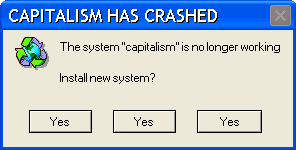

Remember 2011. The Importance of a Year of Global Uprisings.
Chapter 3: The Porspects of Postcapitalism
Most critical thinkers publishing in the last decade are able to make very sound descriptions of the workings of neoliberalism in all its fronts: economic, cultural, aesthetic, ecologic, epistemological, etc. However few actually take up the much necessary task of speculating how social change might look like in the near future—very often only the last chapters, annexes, and sometimes even the very last page of books are dedicated to this. There seems to be a dissonance between the priorities of theoretical formulation and those of pragmatic activism. The former is very conscious of errors made in the past, and as the present world appears complex and ever-changing, it is patient and cautious so as to not fall into wrong assumptions and eventually be able to come up with the right answers. The latter sees the necessity of radically different ways of living and producing as critically urgent—wars, poverty, hunger and global warming are matters that can’t afford to wait.
Of these, climate change has particular characteristics. After the recent economic crisis this issue has been put on hold on the agenda of social concerns, but piling scientific evidence suggests that it should be the most pressing matter. Unlike other very pressing matters like hunger and wars, climate change will affect every country (although not equally), which means, even taking a realist stance, that all governments in the world have vested interest in preventing it from increasing. In fact, Klein argues in This Changes Everything that if climate change was to be really addressed politically, it could motivate deep paradigmatic change like no other issue can. It seems impossible not to exploit the prophetic quality of the climate crisis. At this point, it is not that we should resist capitalism because it is immoral, it is that capitalism is de facto destroying the world—or in any case, the very particular conditions that make the existence of humans in it possible. The prophetical quality comes full circle: figuring out a way to move beyond capitalism is figuring out a way to save us from apocalypse.
Climate change can be the catalyser for legitimately demanding a scheme of production and cooperation that puts capitalist values of accumulation, growth and competitiveness as secondary priorities in face of the all-encompassing necessity to save the planet. However, of those few critical thinkers that do engage in speculative efforts at outlining a non-capitalist organisation of society in the context of the present world, most also consider that the time is ripe for change, albeit for very different reasons. Optimistic sociologists, philosophers, legal scholars and engineers seem to agree on the fact that new information and communication technologies blow the very foundations of capitalism, and consequently already predispose an economic system based on common goods and cooperation.
The idea is that while capitalism in its neo-classical textbook version is based on scarcity, production costs and labour time—all three factors help determine the price of a given good that enters the market—,the locus of economic production today is not material goods but knowledge, software, ideas, code, images and so on, all of which can be replicated ad infinitum with zero marginal cost, hence their price is arbitrary. In this context, capitalism ceases to provide the most useful way of allocating resources, and acts only as parasitic to a realm of human activity that no longer functions according to its logics (Mason, 2015).
It is important to contest capitalism’s appropriation of ‘the new’, but to reclaim the ‘new’ can’t be a matter of adapting to the conditions in which we find ourselves –we’ve done that rather too well, and ‘successful adaptation’ is the strategy of managerialism par excellence. (Fisher 2010: 24)
Mark Fisher argues here that neoliberalism with this renewed enthusiasm based on info-capitalism is not driving the avant-garde of history but rather catching up to a trend that tends to divert away from capitalist practices. By astonishingly adapting not only to new circumstances but also to critique, neoliberalism manages to preserve the core characteristics of capitalism (accumulation) while pretending that the innovation is proof of the wonders of the free market. The example of the internet illustrates this well: amongst the most valuable companies at present are those based on software and social media—think Facebook, Google and Twitter. The realm in which they operate (the world wide web and its protocols) is one that was developed by a series of computer scientists and hackers, who conceived it with the clear purpose of creating a free communication tool for the sake of humanity—it was conceived as an unalienable common. Equally, the immense value that these companies hold comes from their capacity to harness data on the interactions of people on their sites—a purely social input. Thus, while the trends of the new production of value tend towards the social, the (quintessential neoliberal) capitalist dispositive of the commodification of knowledge and intellectual property law works to ensure that these trends always derive in accumulation rather than socialization.
For Castells, who is a leading academic in the field that has come to be named “the network society”, the movements of 2011 are representative of a very important paradigm shift. The availability of communication technologies on a massive scale opens infinite new possibilities for uprisings of this type. The cornerstone of any power structure, as he argues drawing from post-structuralist philosophy, is “persuasion and consensus building” through “the shaping of the minds” (2012: 79). Dominance of the means by which ideas are generated and circulated is thus a crucial tool of power. The evolution of communication technologies allowing the equal and free access of a majority of the world’s population to autonomous communication channels are a subversion of this dominance. These new communication channels are external to the institutionalised ones of the state and the media corporations. The means by which ideas are generated and circulated become decentralised irreversibly. Very local events reach an immediate global audience; “the technology and morphology of these communication networks shape the process of mobilization, and thus of social change, both as a process and as an outcome” (2012: 247).
Thus, the prospect of social change in the near future likely revolves around two aspects. The first, as has been outlined above, is that of technology and the new way of hegemonic production (as cognitive and affective) enabling the context to drive out capitalist principles and rewarding social, communitarian ones. The second, already recognizable in the demands of the demonstrations of 2011, is that of a renewed demand for democracy, seeking to redefine it outside the traditional realm of state politics. A remarkable trait from the protests of 2011 was the explicit resistance to delegate decision-making and be represented by individual leaders or political organizations. Many have considered the lack of leadership of these movements and the inability to crystalize in to political parties as a major flaw. But in reality, it is perhaps the essence of these new movements. True, they weren’t canalized into the conventional mechanisms of political contest (or not straight away), but the reluctance of those present in the squares to be represented should not be read as a weakness or a lack of capacity of organization, but as a very interesting and positive sign of democratic health. In fact, in my particular experience of Barcelona’s acampada, the level of organization was very impressive: an IT department was set up, legal advice was provided, an infirmary was built, a specific time for meals and provision of these was fixed, the agenda for issues to be debated was elaborated each day, an assembleary process of decision-making was established, etc. And not only this, but an important network of mutual aid emerged to deal with problems such as evictions, migrants in risk of deportation, investigation into police abuse, and so on. This was attesting of the capacity of people to build micro-cosmos filled with all the elements of modern social life but apart from the state and more importantly apart from any sort of capitalist logics.

There has in fact been some significant positive political initiative in the aftermath of 2011 that goes in this direction. Citizen candidacies have been elected to the city halls in important European cities such as Barcelona, Grenoble, Reykjavik, Madrid, Naples, Thessaloniki and others as a direct result of 2011. These are political formations that are different from traditional political parties, formed not by professional politicians but by activists, professionals, academics, graduates etc., who call to reinstall a democratic proximity of the institutions of governance with those it governs. They stand for the re-municipalisation of water and electricity, more inclusive urbanism that fights marginalisation, they are open to immigrants, defend social rights, reject austerity measures etc. but perhaps more importantly, they try to open new channels for democratic participation, promote absolute transparency of governance, are open about the challenges and difficulties they encounter and in general engage in an effort to educate the citizenship of the workings of municipal institutions. This is a trend that is gaining importance around the world, with city halls such as New York, Los Angeles, Surabaya, Calgary, Bogota, Medellin and others representing a new paradigm for more decentralised governance that is closer to the citizenry and their concerns. This may well be one of the most feasible early hints at a different way of doing politics that focuses on smaller administrative entities such as the city and town halls, and is thus able to lessen the bureaucratic burden; while at the same time instituting a useful node of communication not only to the country in which it is contained but also to the broader region and the whole world.
We can see how this fits in well with the idea of singularity embedded in a global cause championed by Hardt and Negri in Multitude, which also relates to the hypothesis laid by them on their latest book Commonwealth (2009). The latter is that metropolises, as hubs of important economic and intellectual production, can be the ideal spheres for the production of new ways of organising political life that stimulate democratic practices curtailing the exigencies of global capital.
It is precisely in the paradigm of a connexionist world, in which each part (or node), however little or distant, is in constant communication with the whole of the network, that a reformulation of politics and critique as small-scaled and pragmatic, as opposed to overarching and grandiloquent, gains importance. Apart from the more obvious instances in which a determinate event that enters the reproduction channels of the internet goes viral in a few hours, we are talking here of slower processes that, embedded in a highly interconnected world, will have repercussions that might not be readily noticeable but will surely incur in a sort of ‘butterfly effect’ in the longer term. This effect can be separated into two realms, as it were, one having to do with more material effects—the introduction of biodiversity and agriculture sustainability in a small village in the Andes can result in a decrease in the pollution levels in air and water in the broader region—, the other being an aesthetic/moral effect—prioritising the well-being of the community of the village over the improvement of indicators of its GDP can result in a change of mind-set that will inform a different ethos for administering state affairs; which in turn will provide an example for other states in the international community.
However, this new libertarian ethos of politics forwarded by a view of decentralised, reticular, fluid and spontaneous organisation is ironically close to a kind of neoliberal utopia. The Projective City described by Luc Boltanski (2007) in his New Spirit of Capitalism, as the sublimation of this type of network society, could be both read as the real end-stage of history in which capitalism becomes perfected, or either as the very last step before the enactment of a true democratic communism of ‘each according to his ability, to each according to his needs’. It is worth drawing this parallel, for it can be argued that the ‘new spirit of capitalism’ carries in its core some of the foundations for the possible redemptory project of politics. In fact, it is notorious that some of the proposals being made by those coming from the post-socialist left fit in well with those of neoliberal enthusiasts and recent managerial literature. One illustrative example is that of ‘universal basic income’; a free giveaway of money to everyone just for holding citizenry is one of the most advocated policies by leftist thinkers at present, but it was first proposed by the founding father of neoliberal economy Milton Friedman.
As has been noted, many academic articles and books reflecting on the possibility of social change towards more leftist configurations in the context of the present world have put optimistic emphasis in the possibilities opened by the rise of information technologies, network-type associations and projects, and decaying need of the bureaucratic state. These are always suspiciously close to similar reflections by those who consider these factors, also optimistically, as nothing but the perfection of a newly re-fuelled capitalism. Considering that both the most prominent leftist-progressive literature and pro-private, managerial literature see similar trends in the future, it seems likely that the dissonance will be reduced to ethical values. This proximity also means that those on one side or another can be drawn towards the opposite one with relative ease if provided with the right arguments. If the forces shaping the world to come have enormous potential for realising either a libertarian-anarchist utopia or a uber-capitalist one, a conscious effort by all those who wish to see the former realised and not the latter needs to be put in motion as soon as possible.
Conclusion
The protests of 2011, albeit not having installed a clear change of paradigm in a big scale, have signaled the possibility of it. The observable lack of clear demands is then not necessarily a negative aspect of this cycle of protests; they highlighted the need for these. Precisely because they did not appeal to any known set of demands in the reformist type, the protests generated a possibility for the reopening of utopian thinking: that whilst everything is left to do in the realm of ideas, a generalised understanding of what is to reject has been settled to make space for positive proposals. It is also because of this characteristic that the state apparatuses didn’t know how to react, namely, how to respond to the protests and make some concessions to their demands. Instead the political class acted as they didn’t exist, and used explicit violence by way of police repression, relegating the protesters to the marginal space of nihilist rioters.
Some years later, the social unrest that had led to the rise of these protests has degenerated into reactionary politics, but this might be seen as just one of the many signals that the global project of neoliberalism is in decay. Seeing the stagnation that the political class is showing, when future crisis—whether economic, military or environmental—happen, as they will inevitably do, we must come up with alternatives in order to be prepared and deploy them. The time is ripe for change, we must be both ambitious and patient. Regardless of ehther or not we achieve in providing useful ideas for the future, what is important now is that we encourage ourselves in thinking, imagining and speaking of possibilities and alternatives. Let us not be afraid by the difficulty of the task, let us make of that difficulty our motivating challenge.